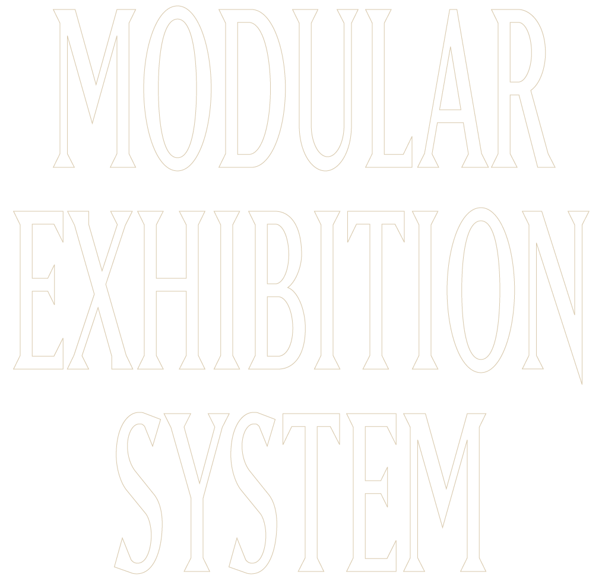
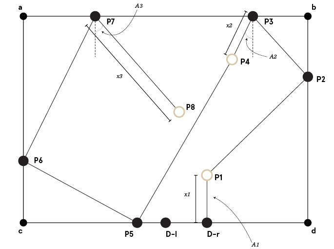
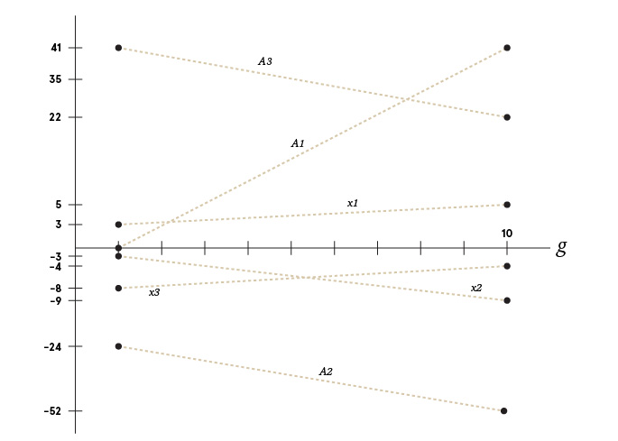
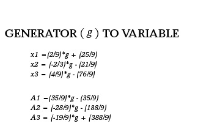
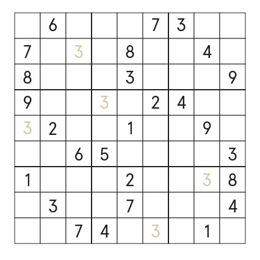

Due to storefront’s shifting location, the company requires a flexible exhibition system for setting up their pop up shops.
An algorithm defined in grasshopper constructs a rectilinear space based on two inputs (height and width). The user defines these positions, as well as the door’s dimensions / position. From these series of points, a snake like form is constructed based on proportions of the space to define the paths where each object will be placed.




For clarification, form follows function in response to a container, specific to: location, material, dimensions, use. Sudoku acts as an excellent metaphor for the limitations of such a space.
A container is defined and presented to the viewer with a set of fixed numbers. To fill the space, numbers must be placed based on a predefined logic. Completing the space occurs by deriving values from pre-existing points of reference. While many of these points can allude to the location of multiple values, the viewer will inherently solve in a linear fashion.